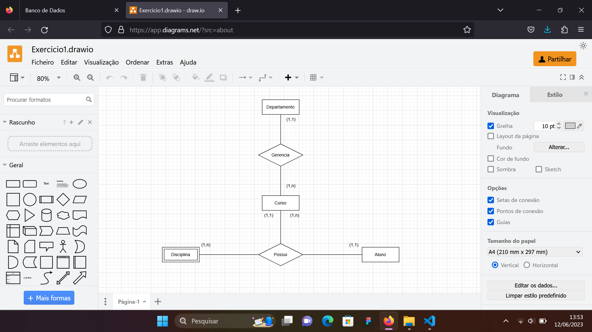
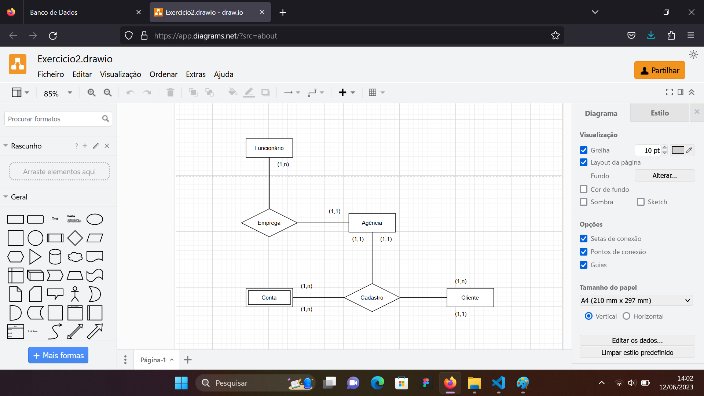
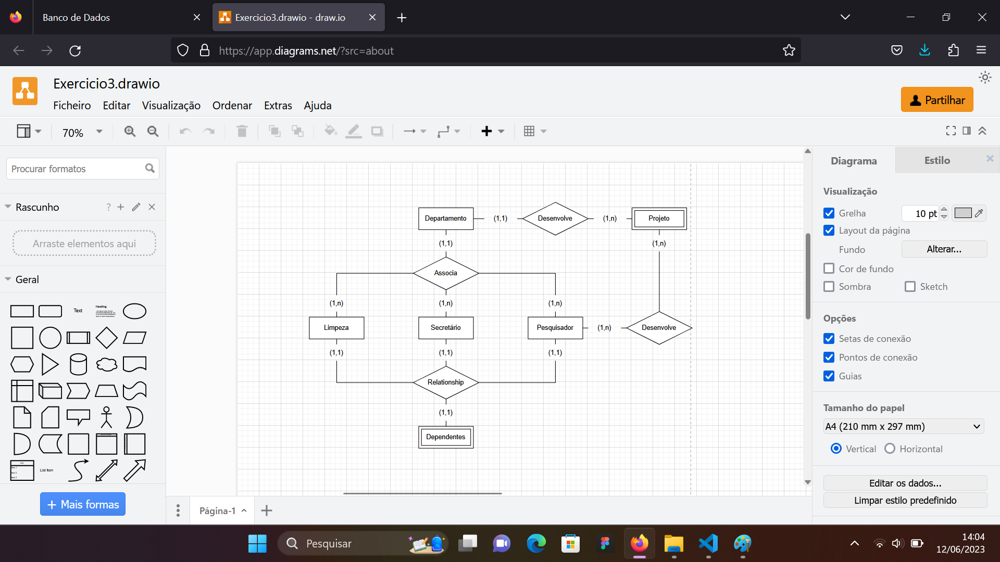
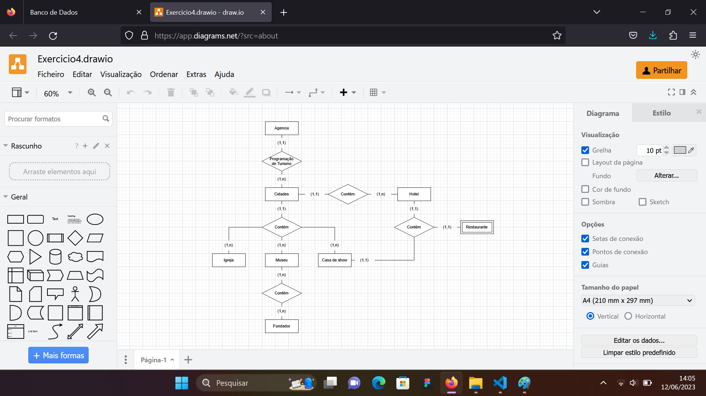
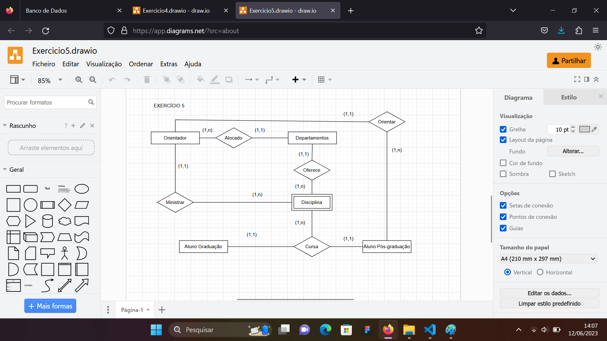

Um banco de dados é uma coleção organizada de informações estruturadas, armazenadas de forma sistemática e acessíveis por meio de um sistema de gerenciamento de banco de dados (SGBD). Ele é projetado para armazenar, gerenciar e recuperar grandes quantidades de dados de forma eficiente e segura.
Para que serve?
Os bancos de dados desempenham um papel fundamental em muitos aspectos da tecnologia moderna. Eles são amplamente utilizados em sistemas de aplicativos, sites, empresas e várias outras áreas. O objetivo principal de um banco de dados é fornecer um meio para armazenar dados de forma persistente, permitindo que os usuários acessem, atualizem e gerenciem esses dados de maneira confiável.
Existem vários tipos de bancos de dados, mas no curso de Ads do Senai foi focado nos dois principais que sao os relacionais e nao relacionais.
Sobre o método de estudo
Foi feito uso de um SGBD nas atividades do curso.
Um SGBD é um software que gerencia o armazenamento, a organização, a recuperação e a segurança dos dados em um banco de dados. Ele fornece uma interface para os usuários interagirem com o banco de dados, permitindo a criação, a consulta, a modificação e a exclusão dos dados. Alguns exemplos populares de SGBDs incluem o Oracle, o MySQL, o PostgreSQL e o MongoDB.
Em resumo, um banco de dados é uma estrutura essencial para armazenar e gerenciar grandes quantidades de informações de forma organizada, permitindo acesso rápido e confiável aos dados quando necessário. Ele desempenha um papel fundamental em muitas aplicações e setores, sendo uma base importante para o armazenamento e a recuperação de informações em diversos contextos.
PostgreSQL
O PostgreSQL é um poderoso sistema de gerenciamento de banco de dados relacional (SGBDR) de código aberto. Ele foi desenvolvido com foco em conformidade com os padrões ANSI SQL e oferece uma ampla gama de recursos avançados para atender às necessidades de aplicativos de diferentes tamanhos e complexidades.
O PostgreSQL é amplamente utilizado em diversos cenários, desde aplicativos web simples até grandes sistemas corporativos.
PgAdmin4
O pgAdmin 4 é um ambiente de administração e desenvolvimento de banco de dados PostgreSQL de código aberto e multiplataforma. Ele fornece uma interface gráfica fácil de usar para gerenciar e interagir com bancos de dados PostgreSQL.
Com o pgAdmin 4, os usuários podem realizar tarefas de administração, como criar, modificar e excluir bancos de dados, tabelas e índices. Ele também oferece recursos avançados, como a capacidade de escrever consultas SQL, visualizar e editar dados, gerenciar usuários e permissões, realizar backup e restauração de bancos de dados em um ambiente grafico.
A interface do pgAdmin 4 é intuitiva e organizada, permitindo que os usuários naveguem facilmente pelos diferentes objetos do banco de dados e acessem as funcionalidades desejadas. Além disso, ele suporta recursos avançados, como a visualização gráfica de consultas, a execução de comandos em lote e a importação/exportação de dados.
Nesse priemiro contato com a área, houve uma introdução sobre o conceito de banco de dados e seu modo de arquitetura e contrução, chamados de modelagem de banco de dados e implementação de banco de dados, respectivamente.
Mini mundo
O primeiro passo para modelar um banco de dados e pensar nele como uma miniatura de uma realidade, chamada de mini mundo.
O "mini mundo" pode ser considerado como uma visão reduzida e focada de um aspecto específico da realidade que se deseja modelar. Por exemplo, em um sistema de gerenciamento de biblioteca, o mini mundo poderia incluir entidades como livros, autores, usuários, empréstimos e reservas. Cada uma dessas entidades teria atributos e relacionamentos específicos que seriam representados no banco de dados.
A representação do mini mundo em um banco de dados envolve o uso de técnicas de modelagem de dados, como o diagrama de entidade-relacionamento (DER) ou a modelagem relacional (MER). Essas técnicas ajudam a organizar as entidades, atributos e relacionamentos de forma coerente e fornecem uma estrutura clara para a criação do esquema do banco de dados.
Foto 1 - Caderno
MER
MER (Modelo de Entidade-Relacionamento) é uma técnica de modelagem de dados.
O MER fornece uma representação visual clara e intuitiva dos componentes principais de um banco de dados, permitindo que os projetistas de banco de dados compreendam facilmente a estrutura do sistema e suas relações. A partir do MER, é possível derivar o esquema do banco de dados, que é a estrutura lógica que será implementada no SGBD escolhido.
É importante ressaltar que o MER é uma etapa inicial da modelagem de dados e pode ser aprimorado e refinado ao longo do processo de projeto do banco de dados, levando em consideração as necessidades e requisitos específicos do sistema em questão.
DER
O Diagrama de Entidade-Relacionamento (DER) é uma representação gráfica utilizada na modelagem de dados para descrever a estrutura lógica de um banco de dados. Ele é baseado no modelo conceitual de entidades, atributos e relacionamentos, permitindo visualizar as entidades envolvidas, seus atributos e os relacionamentos entre elas.
No DER, as entidades são representadas por retângulos, os atributos são representados dentro das entidades, e os relacionamentos são representados por linhas que conectam as entidades envolvidas. Além disso, o DER pode incluir símbolos como chaves primárias, chaves estrangeiras e cardinalidades para definir a natureza e as restrições dos relacionamentos.
Relacionamentos
Em um modelo de entidade-relacionamento (MER), existem dois tipos de relacionamentos entre entidades: relacionamentos fortes e relacionamentos fracos.
Foto 2 - caderno
cardinalidade
É usada para descrever a quantidade de ocorrências que podem ocorrer em um relacionamento entre entidades. Ela especifica o número mínimo e máximo de entidades que podem estar relacionadas através de um determinado relacionamento.
- Um para um (1:1):uma entidade em um lado do relacionamento está relacionada a no máximo uma entidade no outro lado do relacionamento, e vice-versa.
- Um para muitos (1:N):
uma entidade em um lado do relacionamento está relacionada a várias entidades no outro lado do relacionamento, mas uma entidade no segundo lado está relacionada a no máximo uma entidade no primeiro lado.
- Muitos para muitos (N:N): várias entidades em um lado do relacionamento podem estar relacionadas a várias entidades no outro lado do relacionamento.
Foto 3 - caderno
Tipos de modelos de banco de dados
Existem 3 tipos:
- Modelo Conceitual
- Modelo Logico
- Modelo Fisico
Nessa lista de exercicios, foram passados 6 mini mundos onde deveríamos discutir em grupo e modelar o banco de dados em um DER.
A ferramenta usada para isso foi o web site Draw.io.
Exercício 1 - Controle acadêmico I
Nesse exercício foi dada uma situção de uma universidade que quer construir um BD com certas regras de negócio.
Confira abaixo o diagrama final do exercício:

Exercício 2 - Sistema de controle bancário
Nesse exercício foi pedido a modelagem de um BD que quer gerenciar clientes e operações sob certas regras de negócio.
Confira abaixo o diagrama final do exercício:

Exercício 3 - Companhia
Nesse exercício foi pedido para construir um BD con certas regras de negócio de gerenciamento dos departamentos e funcionários de uma companhia.
Confira abixo o diagrama final do exercício:

Exercício 4 - Agência de turismo
Nesse exercício foi pedido para criar um BD com certas regras de negócio para uma agência de turismo que controla passeios, reservas em hoteis, restaurantes e casas de shows.
Confira abaixo o diagrama final do exercício:

Exercício 5 - Controle acadêmico II
Nesse exercício foi apresentado um outro mini mundo de uma universidade que quer construir um BD com certas regras de negócio para controle departamental, gerenciando curso, docentes e discentes.
Confira abaixo o diagrama final do exercício:

Exercício 6 - Variações
Nesse exercício foram dados mais alguns critérios de complemento do exercício anterior, portanto a sua resposta está embutida no DER anterior.
Nesse exercício foi proposto que pegássemos o modelo MER/DER do exercício 4 da lista anterior e fizessemos o modelo físico do banco de dados, ou seja, a chamadada "implementação de banco de dados".
A implementação de um banco de dados envolve várias etapas, desde o planejamento e projeto até a configuração e administração do sistema.
1- Sistema Gerenciador de Banco de dados - sgbd
O primeiro passo foi determinar quais as entidades fortes e fracas do banco de dados, assim como seus relacionamentos. Etapa feita no exercício anterior, mas agora aprofundada levando em conta os atributos de cada entidade, assim como os seus relacionamentos, dados através das PK - Primary keys e FK - Foreign keys
Com base nos requisitos e no modelo de banco de dados escolhido, foi feita a implementação do BD no SGBD PostgreSQL. Para isso usamos a linguagem PL/pgSQL.
2 - Comandos Data Definition Language - DDL
Feita instalação do sistema SGBD, o segundo passo foi começar a criar as tabelas do BD. Para isso, foi feito uso da DDL.
DDL (Data Definition Language) é uma parte do SQL que permite criar, modificar e excluir estruturas de banco de dados, como tabelas, índices, etc.
Os comandos mais utilizados do DDL no exercício foram:
- CREATE TABLE: Cria uma nova tabela no banco de dados.
- ALTER TABLE: Modifica a estrutura de uma tabela existente, como adicionar, modificar ou excluir colunas.
- DROP TABLE: Exclui uma tabela do banco de dados.
3 - Comandos Data Manipulation Language - DML
DML (Data Manipulation Language) é uma parte do SQL que permite manipular os dados dentro das tabelas do banco de dados. Aqui estão alguns comandos DML utilizados no exercicio:
- SELECT: Recupera registros de uma tabela ou tabelas relacionadas.
- UPDATE: Atualiza registros existentes em uma tabela.
- DELETE: Exclui registros de uma tabela.
O comando WHERE desempenha um papel crucial no DML ao realizar operações de consulta, atualização ou exclusão de dados. O WHERE é usado para especificar condições que filtram os registros que serão afetados pela operação.
Se você não usar a cláusula WHERE no DML, as operações de consulta, atualização ou exclusão serão aplicadas a todos os registros da tabela-alvo. Isso pode resultar em efeitos indesejados, como a modificação ou exclusão de todos os registros em uma tabela, ou a recuperação de todos os registros em uma consulta, incluindo aqueles que você pode não precisar.
4 - Comando Data Query Language - DQL
DQL (Data Query Language) é uma parte do SQL (Structured Query Language) que se concentra na recuperação de dados de um banco de dados. Ele é usado para executar consultas e extrair informações específicas das tabelas. Foram usados alguns comando DQL nesse trabalho, como:
- SELECT: comando mais comumente usado em DQL. Ele recupera dados de uma ou mais tabelas com base em critérios específicos.
- FROM: Especifica a tabela ou tabelas das quais os dados serão recuperados.
- ORDER BY: Classifica os resultados em ordem ascendente ou descendente com base em uma ou mais colunas.
- GROUP BY: Agrupa os resultados com base em uma ou mais colunas e permite a aplicação de funções de agregação, como COUNT, SUM, AVG, etc.
Relacionamentos entre as tabelas
No exercício, há duas tabelas principais: "cidade" e "hotel". Vou explicar os relacionamentos entre essas tabelas, detalhando as chaves primárias (PK) e as chaves estrangeiras (FK) das principais tabelas.
Tabela "cidade"
id_cidade: É a chave primária da tabela "cidade" e é do tipo SERIAL, o que significa que é um número único e automático gerado para cada registro inserido.
nome: Armazena o nome da cidade e é do tipo VARCHAR com tamanho máximo de 50 caracteres.
estado: Armazena a sigla do estado da cidade e é do tipo VARCHAR com tamanho máximo de 2 caracteres.
populacao: Armazena a população da cidade e é do tipo INT (inteiro).
Na tabela "cidade", a coluna "id_cidade" é a chave primária (PK), que garante a unicidade de cada registro. Não há chaves estrangeiras (FK) nessa tabela.
Tabela "hotel"
id_hotel: É a chave primária da tabela "hotel" e é do tipo SERIAL, gerando automaticamente um número único para cada registro.
id_cidade: É uma chave estrangeira (FK) que faz referência à coluna "id_cidade" da tabela "cidade". Isso estabelece uma relação entre as duas tabelas, indicando que um hotel está associado a uma cidade específica.
nome: Armazena o nome do hotel e é do tipo VARCHAR com tamanho máximo de 50 caracteres.
estrelas: Armazena o número de estrelas do hotel e é do tipo INT.
endereco_hotel: Armazena o endereço do hotel e é do tipo VARCHAR com tamanho máximo de 100 caracteres.
Na tabela "hotel", a coluna "id_hotel" é a chave primária (PK), garantindo a unicidade de cada registro. Além disso, a coluna "id_cidade" é uma chave estrangeira (FK) que faz referência à tabela "cidade". Isso significa que o valor inserido na coluna "id_cidade" na tabela "hotel" deve corresponder a um valor existente na coluna "id_cidade" da tabela "cidade". Essa relação permite associar cada hotel a uma cidade específica.
id_hotel: É a chave primária da tabela "hotel" e é do tipo SERIAL, gerando automaticamente um número único para cada registro.
id_cidade: É uma chave estrangeira (FK) que faz referência à coluna "id_cidade" da tabela "cidade". Isso estabelece uma relação entre as duas tabelas, indicando que um hotel está associado a uma cidade específica.
nome: Armazena o nome do hotel e é do tipo VARCHAR com tamanho máximo de 50 caracteres.
estrelas: Armazena o número de estrelas do hotel e é do tipo INT.
endereco_hotel: Armazena o endereço do hotel e é do tipo VARCHAR com tamanho máximo de 100 caracteres.
Tabela "disponibilidade_categoria"
id_categoria: É a chave primária da tabela "disponibilidade_categoria" e é do tipo SERIAL.
id_hotel: É uma chave estrangeira (FK) que faz referência à coluna "id_hotel" da tabela "hotel". Isso indica que cada registro nessa tabela está associado a um hotel específico.
categoria: Armazena a categoria de disponibilidade do hotel e é do tipo VARCHAR.
disponibilidade: Armazena a disponibilidade da categoria para o hotel e é do tipo INT.
A tabela "disponibilidade_categoria" possui uma relação com a tabela "hotel" através da coluna "id_hotel" como chave estrangeira (FK). Isso significa que cada registro nessa tabela está vinculado a um hotel específico, permitindo armazenar informações sobre a disponibilidade de categorias para cada hotel.
Tabela "disponibilidade_quarto"
id_quarto: É a chave primária da tabela "disponibilidade_quarto" e é do tipo SERIAL.
id_hotel: É uma chave estrangeira (FK) que faz referência à coluna "id_hotel" da tabela "hotel". Isso indica que cada registro nessa tabela está associado a um hotel específico.
numero_quarto: Armazena o número do quarto disponível e é do tipo INT.
disponibilidade: Armazena a disponibilidade do quarto para o hotel e é do tipo BOOLEAN.
A tabela "disponibilidade_quarto" possui uma relação com a tabela "hotel" através da coluna "id_hotel" como chave estrangeira (FK). Isso permite armazenar informações sobre a disponibilidade de quartos para cada hotel.
Tabela "restaurante"
id_restaurante: É a chave primária da tabela "restaurante" e é do tipo SERIAL, gerando automaticamente um número único para cada registro.
id_cidade: É uma chave estrangeira (FK) que referencia a coluna "id_cidade" na tabela "cidade". Isso estabelece uma relação entre as duas tabelas, indicando que um restaurante está associado a uma cidade específica.
nome: Armazena o nome do restaurante e é do tipo VARCHAR com tamanho máximo de 50 caracteres.
tipo_cozinha: Armazena o tipo de cozinha do restaurante e é do tipo VARCHAR com tamanho máximo de 50 caracteres.
endereco: Armazena o endereço do restaurante e é do tipo VARCHAR com tamanho máximo de 100 caracteres.
Na tabela "restaurante", a coluna "id_restaurante" é a chave primária (PK), garantindo a unicidade de cada registro. Além disso, a coluna "id_cidade" é uma chave estrangeira (FK) que faz referência à tabela "cidade". Isso significa que o valor inserido na coluna "id_cidade" na tabela "restaurante" deve corresponder a um valor existente na coluna "id_cidade" da tabela "cidade". Essa relação permite associar cada restaurante a uma cidade específica.
Tabela "cidade"
id_cidade: É a chave primária da tabela "cidade" e é do tipo SERIAL, gerando automaticamente um número único para cada registro.
nome: Armazena o nome da cidade e é do tipo VARCHAR com tamanho máximo de 50 caracteres.
estado: Armazena a sigla do estado da cidade e é do tipo VARCHAR com tamanho máximo de 2 caracteres.
populacao: Armazena a população da cidade e é do tipo INT (inteiro).
A tabela "cidade" é referenciada pela tabela "restaurante" através da chave estrangeira (FK) "id_cidade". Isso estabelece uma relação entre as duas tabelas, permitindo que cada restaurante esteja associado a uma cidade específica.
Tabela "casa_de_shows"
id_casa_de_shows: É a chave primária da tabela "casa_de_shows" e é do tipo SERIAL, gerando automaticamente um número único para cada registro.
id_cidade: É uma chave estrangeira (FK) que referencia a coluna "id_cidade" na tabela "cidade". Isso estabelece uma relação entre as duas tabelas, indicando que uma casa de shows está associada a uma cidade específica.
nome: Armazena o nome da casa de shows e é do tipo VARCHAR com tamanho máximo de 50 caracteres.
capacidade: Armazena a capacidade da casa de shows, representada por um valor numérico.
endereco: Armazena o endereço da casa de shows e é do tipo VARCHAR com tamanho máximo de 100 caracteres.
Na tabela "casa_de_shows", a coluna "id_casa_de_shows" é a chave primária (PK), garantindo a unicidade de cada registro. Além disso, a coluna "id_cidade" é uma chave estrangeira (FK) que faz referência à tabela "cidade". Isso significa que o valor inserido na coluna "id_cidade" na tabela "casa_de_shows" deve corresponder a um valor existente na coluna "id_cidade" da tabela "cidade". Essa relação permite associar cada casa de shows a uma cidade específica.
Tabela "museu"
id_museu: É a chave primária da tabela "museu" e é do tipo SERIAL, gerando automaticamente um número único para cada registro.
id_cidade: É uma chave estrangeira (FK) que referencia a coluna "id_cidade" na tabela "cidade". Isso estabelece uma relação entre as duas tabelas, indicando que um museu está associado a uma cidade específica.
nome: Armazena o nome do museu e é do tipo VARCHAR com tamanho máximo de 50 caracteres.
ano_fundacao: Armazena o ano de fundação do museu, representado por um valor numérico.
endereco: Armazena o endereço do museu e é do tipo VARCHAR com tamanho máximo de 100 caracteres.
Na tabela "museu", a coluna "id_museu" é a chave primária (PK), garantindo a unicidade de cada registro. Além disso, a coluna "id_cidade" é uma chave estrangeira (FK) que faz referência à tabela "cidade". Isso significa que o valor inserido na coluna "id_cidade" na tabela "museu" deve corresponder a um valor existente na coluna "id_cidade" da tabela "cidade". Essa relação permite associar cada museu a uma cidade específica.
Tabela "fundadores"
id_fundador: É a chave primária da tabela "fundadores" e é do tipo SERIAL, gerando automaticamente um número único para cada registro.
nome: Armazena o nome do fundador e é do tipo VARCHAR com tamanho máximo de 50 caracteres.
id_museu: É uma chave estrangeira (FK) que referencia a coluna "id_museu" na tabela "museu". Isso estabelece uma relação entre as duas tabelas, indicando que um fundador está associado a um museu específico.
A tabela "fundadores" é referenciada pela tabela "museu" através da chave estrangeira (FK) "id_museu". Isso significa que cada registro na tabela "fundadores" está associado a um museu específico, indicado pelo valor correspondente na coluna "id_museu" da tabela "museu".
Consultas realizadas
Foi proposto que fizessemos alguns codigos de consulta no trabalho, realizamos 2 codigos.
Consulta 1
Nesta consulta, estamos obtendo informações sobre os museus e a quantidade de fundadores para cada museu que possui mais de um fundador. Aqui está o passo a passo:
- A linha "FROM fundador" indica que estamos selecionando dados da tabela "fundador"
- A cláusula INNER JOIN museu ON fundador.id_museu = museu.id_museu estabelece uma junção (join) entre as tabelas "fundador" e "museu" usando a coluna "id_museu" como chave de relacionamento. Isso permite obter informações sobre o museu associado a cada fundador.
- A linha "GROUP BY" fundador.id_museu, museu.descricao_museu agrupa os resultados pelo "id_museu" e pela "descricao_museu" do museu. Isso significa que teremos um resultado para cada museu único.
- A cláusula COUNT(*) > 1 filtra os grupos resultantes para incluir apenas aqueles que possuem uma contagem de fundadores maior que 1. Isso nos permite obter apenas os museus que possuem mais de um fundador.
- Por fim, na linha SELECT fundador.id_museu, museu.descricao_museu, COUNT(*) as quantidade_de_fundadores, selecionamos as colunas que desejamos exibir no resultado da consulta. Estamos exibindo o "id_museu" e a "descricao_museu" do museu, além de contar a quantidade de fundadores usando a função COUNT(*) e atribuindo-a ao alias "quantidade_de_fundadores".
Consulta 2
Nesta consulta, estamos obtendo informações sobre os hotéis e a quantidade de reservas para cada hotel. Aqui está o passo a passo:
- A linha FROM reserva_hotel indica que estamos selecionando dados da tabela "reserva_hotel".
- A cláusula INNER JOIN hotel ON reserva_hotel.id_hotel = hotel.id_hotel estabelece uma junção (join) entre as tabelas "reserva_hotel" e "hotel" usando a coluna "id_hotel" como chave de relacionamento. Isso permite obter informações sobre o hotel associado a cada reserva.
- A linha GROUP BY hotel.id_hotel, reserva_hotel.id_reserva_hotel agrupa os resultados pelo "id_hotel" do hotel e pelo "id_reserva_hotel" da reserva. Isso significa que teremos um resultado para cada combinação única de hotel e reserva.
- Por fim, na linha SELECT reserva_hotel.id_hotel, hotel.nome, COUNT(*) as quantidade_de_reservas, selecionamos as colunas que desejamos
Para mais detalhes sobre o trabalho, consultar o código completo e ter acesso ao DER do projeto, não deixe de clicar no botão abaixo e conferir no GitHub.